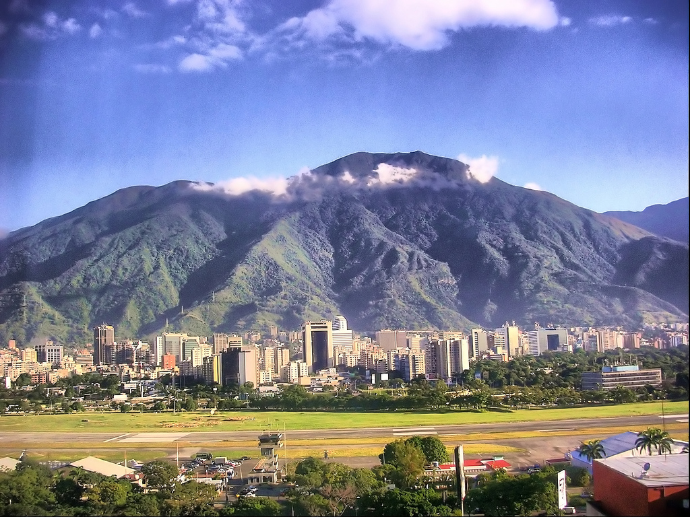

History
Caracas: A City of History, Revolution, and Resilience
Caracas, the capital of Venezuela, is a city shaped by history, revolution, and constant change. Nestled between the towering Ávila Mountain and the Caribbean coast, it has seen everything—from indigenous tribes and Spanish conquest to independence movements and modern transformations.
Where It All Began
Long before skyscrapers and highways, the area was home to indigenous tribes, mainly the Caribes and Teques, who lived off the land and fiercely resisted Spanish colonization. However, in 1567, Diego de Losada arrived with his troops and founded Santiago de León de Caracas, marking the beginning of a new era.
The Birthplace of Revolution
Caracas isn’t just Venezuela’s capital—it’s the cradle of independence. In 1810, local leaders launched the first movement to break free from Spanish rule, leading to the rise of Simón Bolívar, one of history’s greatest liberators. After years of war, Venezuela gained its independence in 1821, forever marking Caracas as the heart of the revolution.

From Colonial Town to Modern City
In the 20th century, oil transformed Caracas. Money poured in, skyscrapers rose, and highways stretched across the city. By the 1950s and 1970s, Caracas was one of the most modern cities in Latin America, with landmarks like Parque Central, the Caracas Metro, and sprawling urban developments shaping its landscape.
Crisis and Change
The 1980s and 1990s brought economic struggles, protests, and political shifts, including the rise of Hugo Chávez in 1998, changing Venezuela’s course. Caracas faced challenges, but its people—resilient and full of life—continue to keep its spirit alive.
Caracas Today
Today, Caracas is a city of contrasts—historic plazas sit next to modern high-rises, and street vendors sell traditional arepas under the shadows of towering buildings. It’s a place of culture, music, and breathtaking landscapes, where history meets the energy of its people.
Despite its ups and downs, Caracas remains the beating heart of Venezuela—a city that never stops moving, adapting, and inspiring.